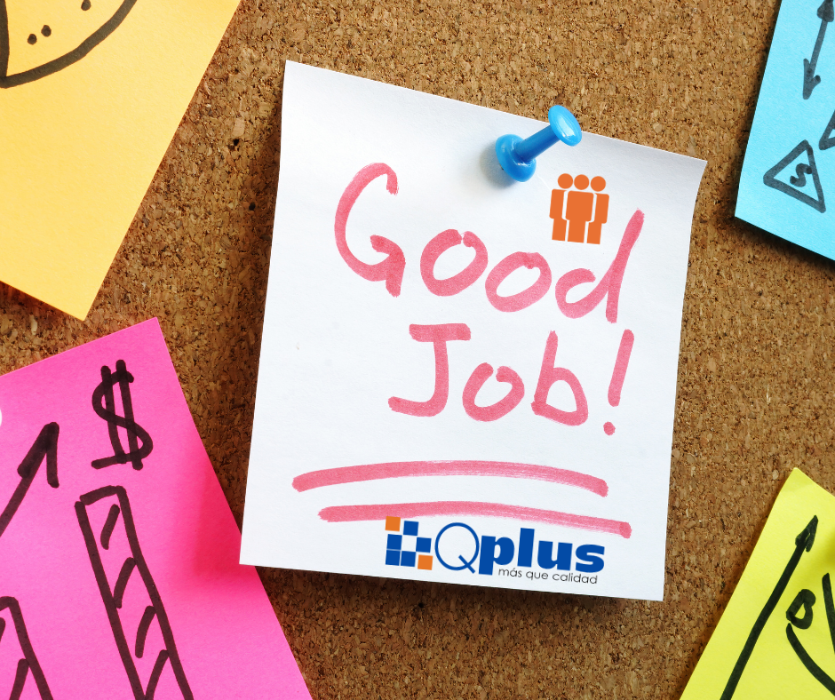
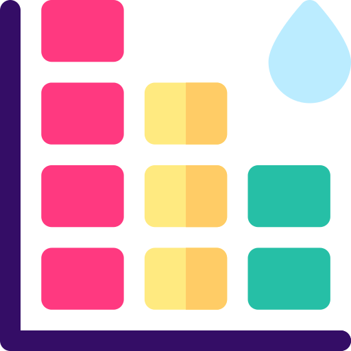

Medición de Resultados
Evaluaciones de 90°, 180° y 360° totalmente parametrizables.
Análisis de brechas de competencias y planes de desarrollo.
Visualización gráfica de los resultdos en Mapa de Desempeño para la toma de decisiones en tiempo real.
Administración y análisis del desarrollo de los colaboradores de la empresa, de una manera eficiente, basado en el análisis de competencias (organizacionales y de rol) y análisis de rendimiento (indicadores por funcionario).
Evaluaciones de 90°, 180° y 360° totalmente parametrizables.
Análisis de brechas de competencias y planes de desarrollo.
Visualización gráfica de los resultdos en Mapa de Desempeño para la toma de decisiones en tiempo real.

|
Diccionario de Competencias |
• Consulta centralizada de competencias y comportamientos específicos por cargo. • Visualización de niveles de dominio requeridos para cada rol organizacional. |
|
Descripción de Cargo |
• Creación y administración integral de perfiles de cargo dinámicos. • Actualización automática de competencias requeridas según el desempeño esperado. • Asociación de EPP, comités, requisitos de educación, formación y experiencia. • Vinculación de indicadores de cargo para un Análisis de Rendimiento preciso. |
|
Estadísticas |
• Monitoreo en tiempo real del progreso de diligenciamiento por evaluación. • Consolidado de resultados del análisis de competencias y rendimiento. • Sistema avanzado de filtros por dirección, gerencia, área o visión general de la empresa. |
|
 Mapa de Desempeño |
• Visualización gráfica (9 Box) de la posición de los colaboradores según su desempeño. • Plano de dos ejes para comparar niveles de Competencias vs. Rendimiento. • Parametrización personalizada de niveles de desempeño, nombres y colores. |
|
Análisis de Desarrollo (ADI) |
• Programación de ciclos de evaluación (Jefe, Autoevaluación y Pares). • Análisis combinado de desarrollo de competencias técnicas y rendimiento de indicadores. • Obtención de concepto final basado en promedios ponderados de valoración. |
|
Plan de Desarrollo Individual |
• Planeación de actividades anuales para el cierre de brechas y mejora de competencias. • Registro y seguimiento de compromisos hasta su cierre efectivo. • Integración de recursos externos (links a cursos, videos y material de formación). |

Descripción de Competencias |
• Administración de competencias organizacionales, de rol y sus niveles de comportamiento. • Asociación paramétrica de cargos y niveles de exigencia por competencia. |